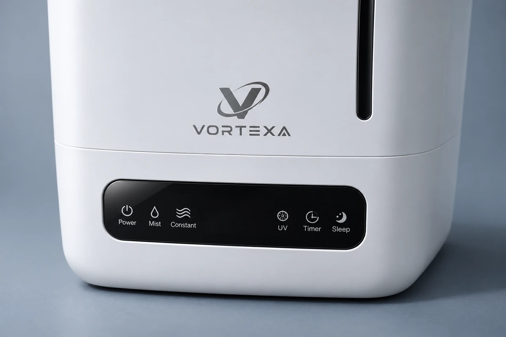
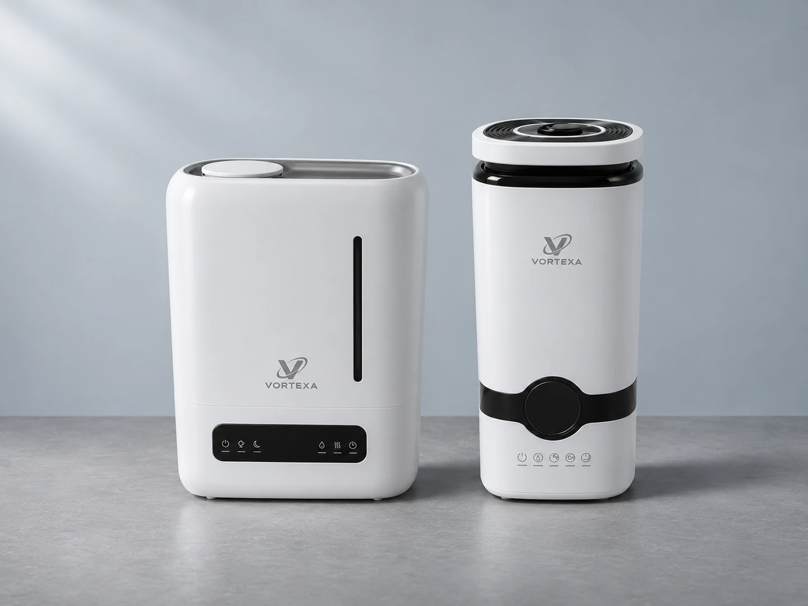

Ауа ылғалдандырғыш T-2215-ZN LCD
25–40 м² бөлмеге
Суды үстінен құйыңыз. Ылғалдылық пен температура дисплейде көрінеді.
Бөлме ауданын тексеру- Су үстінен құйылады
- 4 л
- Су шығыны
- 280 мл/сағ дейін
- Ылғалдылық пен температура
- LCD
Бөлмеңізге сай келе ме?
Тікбұрышты бөлменің ұзындығы мен енін енгізіңіз. Модель 25–40 м² ауданға арналған.
Көрсетілген 25–40 м² аралығына кіреді.
Бак пен су шығыны
Бір кеште қанша су жұмсалады?
Есеп ең жоғары 280 мл/сағ қарқынмен үздіксіз жұмыс істеуге арналған.
4 сағаттағы есептік су шығыны
1,12 л
28% — төрт литрлік бак көлемінің осындай бөлігі жұмсалады
8 сағаттағы есептік су шығыны
2,24 л
56% — төрт литрлік бак көлемінің осындай бөлігі жұмсалады
12 сағаттағы есептік су шығыны
3,36 л
84% — төрт литрлік бак көлемінің осындай бөлігі жұмсалады

Бір корпустағы үш көрсеткіш
Экран бөлмедегі жағдайды, алдыңғы панельдің оң жағындағы терезе су деңгейін көрсетеді.
Бактағы судан бөлмедегі ылғалға дейін
Бакқа су құю
Суды құмырамен әкеліп, бакқа үстінен құясыз. Алдыңғы жіңішке терезе су қосатын кезді көрсетеді. Бактағы су таусылса, құрылғы өздігінен өшеді.
Тұман қалай түзіледі
Ультрадыбыстық элемент суды ұсақ тамшыларға бөледі. Олар корпустың үстіңгі жағындағы саңылаудан шығады. Mist пернесі ағынды реттейді, Constant ылғалдылықты ұстап тұру режимін қосады.
Дисплей көрсеткіштері
Қоспас бұрын ылғалдылықты қарап алыңыз, кейін көрсеткішті қайта тексеруге болады. Дисплейдегі %RH бөлме ауасының салыстырмалы ылғалдылығын білдіреді. Бактағы су деңгейі корпустағы бөлек терезеден көрінеді.
Панельдегі алты перне
Қосу
Бұл перне құрылғыны қосып-өшіреді. Жұмыс кезінде дисплей ауаның көрсеткіштерін көрсетеді.
Тұман ағыны
Ылғалдандыру қарқынын өзгерту үшін Mist пернесін басыңыз. Су шығыны таңдалған деңгейге байланысты.
Ылғалдылықты ұстап тұру
Бұл перне ауа ылғалдылығын ұстап тұру режимін қосады. Қазіргі мәнін дисплейден көре аласыз.
UV функциясы
UV функциясының жеке пернесі бар. Ол дисплейдегі сандардың оң жағында орналасқан.
Таймер
Құрылғы белгілі бір кезде ылғалдандыруды аяқтасын десеңіз, жұмыс уақытын белгілеңіз. Бұл баптау пультте де бар.
Түнгі режим
Ай белгісі бар перне құрылғыны түнгі режимге ауыстырады. Кешке оны пульттен басуға болады.

Таймер және түнгі режим
Пультті төсек жанына қалдырыңыз
Пультпен таймерді орнатуға немесе түнгі режимді қосуға болады.
25–40 м² бөлмеге
Екі модель де төрт литр су сыйдырады. Басқару тәсілдері әртүрлі.
Екі ылғалдандырғышты салыстыру
Сипаттамалар
Барлық параметрлер 9
- Бак көлемі
- 4 л
- Су шығыны
- 280 мл/сағ дейін
- Бөлме ауданы
- 25–40 м²
- Ылғалдандыру тәсілі
- Ультрадыбыстық
- Су құю
- Үстінен
- Дисплей
- Температура мен ылғалдылық
- Басқару
- Пульт, таймер, түнгі режим
- Қосымша функциялар
- Ылғалдылықты ұстап тұру, UV
- Бак босаса
- Автоматты түрде өшеді
Бөлменің ауданын ба, әлде бүкіл пәтерді есептеймін бе?
Құрылғы тұратын бөлменің ауданын есептеңіз. Мысалы, 5 × 6 м қонақ бөлменің ауданы 30 м², ол көрсетілген 25–40 м² аралығына кіреді. Есіктері жабық бірнеше бөлме үшін бүкіл пәтердің ауданы дұрыс бағдар бермейді.
Mist пен Constant нені білдіреді?
Mist тұманның берілуін реттейді. Constant ылғалдылықты ұстап тұру режимін қосады. Ауаның қазіргі күйін бақылау үшін дисплейдегі пайыздық көрсеткішке қараңыз.
Түнде қанша су жұмсалатынын есептеуге бола ма?
Сағатына 280 мл үздіксіз берілсе, сегіз сағатта есеп бойынша 2,24 л жұмсалады. Бактың номинал көлемі 4 л. Нақты шығын таңдалған қарқын мен жұмыс уақытына байланысты.
UV функциясын бөлек басқаруға бола ма?
Алдыңғы панельде бөлек UV пернесі бар. Өндіруші материалдарында бұл модель үшін өңдеу тиімділігі пайызбен көрсетілмеген.
Хош иісті майға екі модельдің қайсысын таңдаған дұрыс?
T-606 моделінде хош иісті майға арналған жеке бөлік бар. T-2215 экраны ылғалдылық пен температураны көрсетеді, ал алдыңғы терезесінен бактағы су деңгейін тексеруге болады.

Ауа ылғалдандырғыш
T-2215-ZN LCD
[24 990 ₸]
- [Қоймада бар]
- Жеткізу [1–7 күн]
- Кепілдік [12 ай]
Сатушыға сұрақ қою
Мәтінді көшіріп, сатушыға жіберіңіз. Тауар атауы мен моделі енгізілген.